Ace loves chilling with his head rested on my lap, taking pictures, and loves playing.
Ace loves chilling with his head rested on my lap, taking pictures, and loves playing.
I consider myself to be fun and outgoing but not too risky. Meaning if you ever find yourself involved in situation where hieghts are involved, you're probably better off getting someone else to help! Which leads me to speak about about my weakness: Without a doubt heights. I know there's sayings about people are afraid of heights because they are afraid of falling... Which may be true in some situations but in others I'm just being totally realistic, Like why should I sit, get strapped into a chair and mentally prepare myself to be flung a 100ft in the air? It's just not a normal thing I would do! In actuality that's a huge goal of mine, along with not passing out in the process of course.
Meaning if you ever find yourself involved in situation where hieghts are involved, you're probably better off getting someone else to help! Which leads me to speak about about my weakness: Without a doubt heights. I know there's sayings about people are afraid of heights because they are afraid of falling... Which may be true in some situations but in others I'm just being totally realistic, Like why should I sit, get strapped into a chair and mentally prepare myself to be flung a 100ft in the air? It's just not a normal thing I would do! In actuality that's a huge goal of mine, along with not passing out in the process of course.
I love hosting game nights and having mentally stimulating conversations. 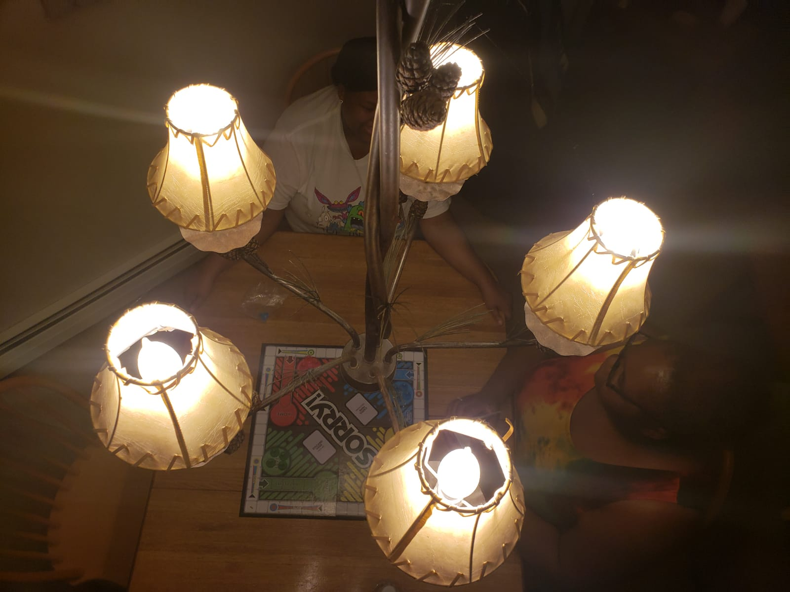Also, I love children and currently have two wonderful nephews and one on the way! My favorite thing about being an auntie is playing and spoiling my nephews every chance I get. 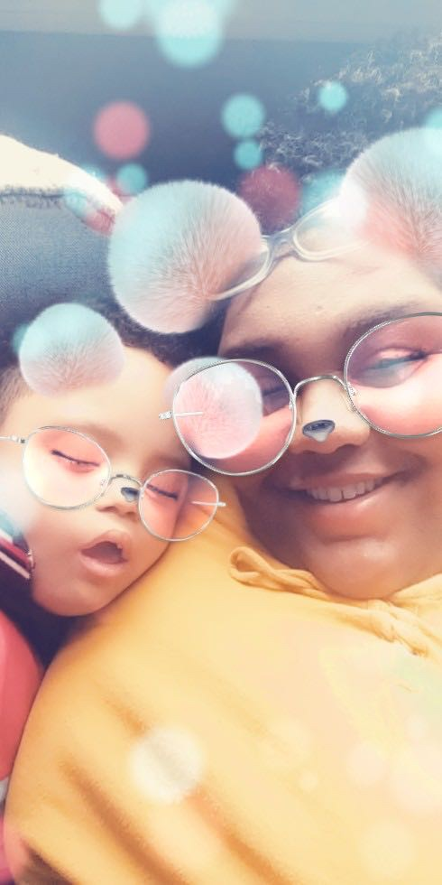 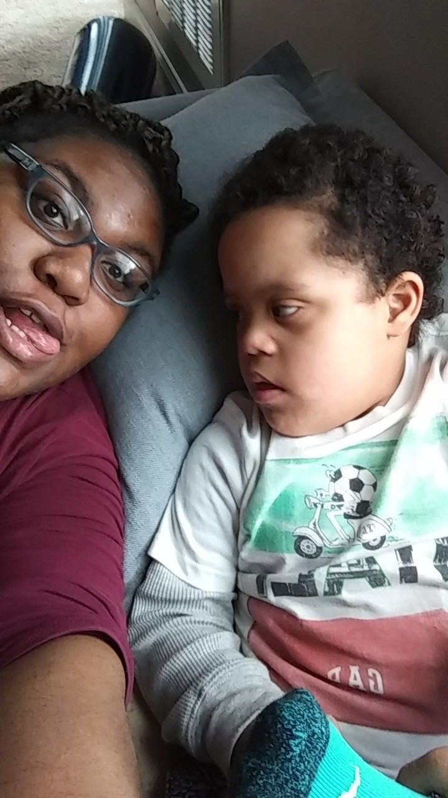 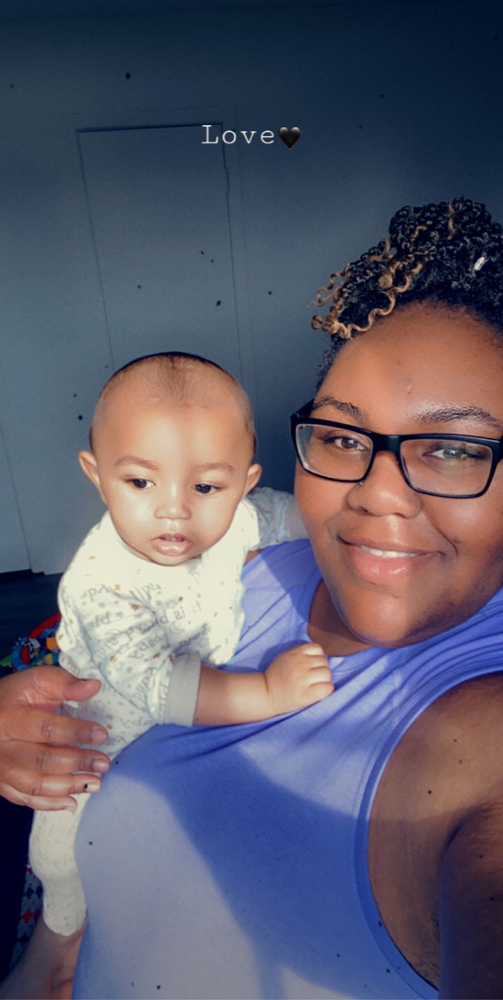 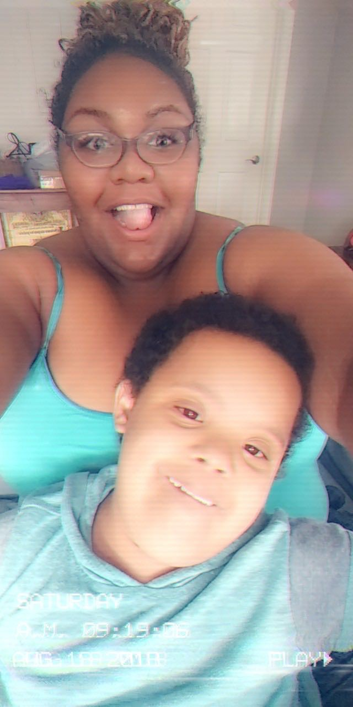 Why, because at the end of the day I drop them back off with their parents,so I wouldn't have to deal with the aftermath. So, yes, I've already accepted the karma that's brewing for me when I start my family lol! I'm expecting no sleep.
One of my strengths, I would say, is interacting with others. Honestly, I have no idea how that came about, mainly since all of my siblings are the total opposite. I love talking to people on different notes whether it is on a good or bad note, I love to help. I love to improve qualities and situations. It warms my heart and puts a smile on my face to see others doing well and succeeding in life without competition.
Top Click Here!!! to visit my web330 JavaScript
Click Here!!! to visit my web330 JavaScript Click Here!!! to visit my web231 intro to JavaScript
Click Here!!! to visit my web231 intro to JavaScript  I've taking an interest in traveling! I'm evening picking up some new hobbies such as assisting in film production and playing tennies to go along with my kick boxxing and dancing. I would have nevered thought that in a million years I would take an interst in traveling. However I'm branching out and taking an interest in sightseeing and adventure seeking before I start a family.
I've taking an interest in traveling! I'm evening picking up some new hobbies such as assisting in film production and playing tennies to go along with my kick boxxing and dancing. I would have nevered thought that in a million years I would take an interst in traveling. However I'm branching out and taking an interest in sightseeing and adventure seeking before I start a family.

 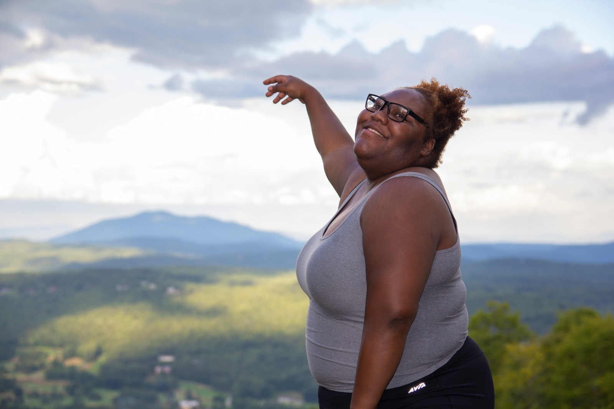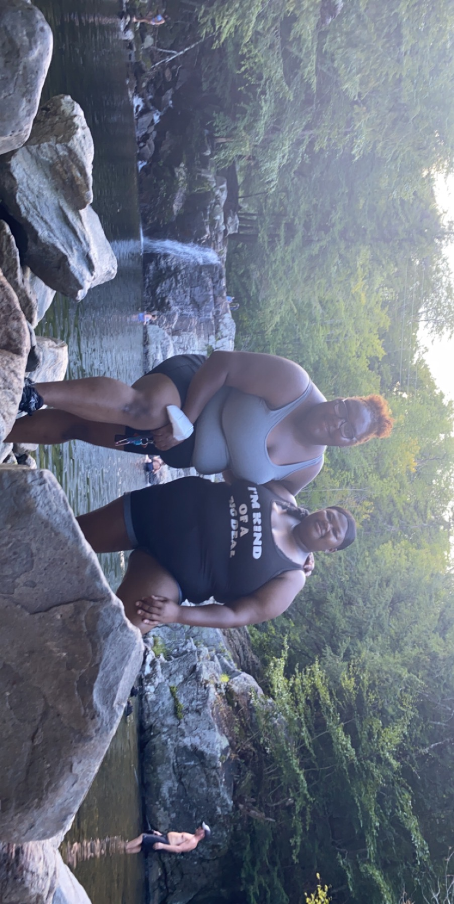
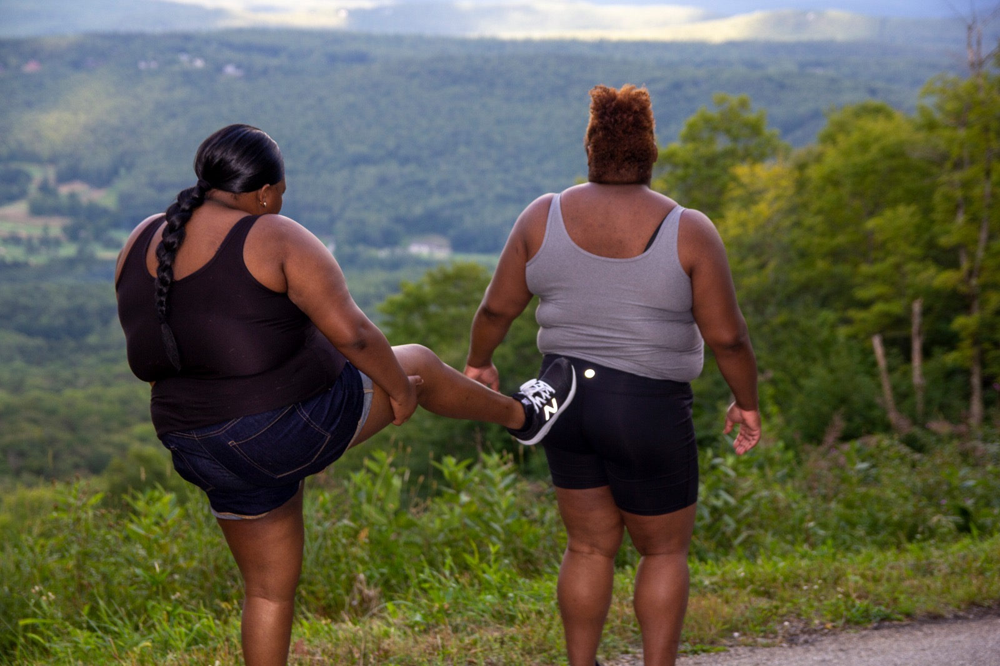
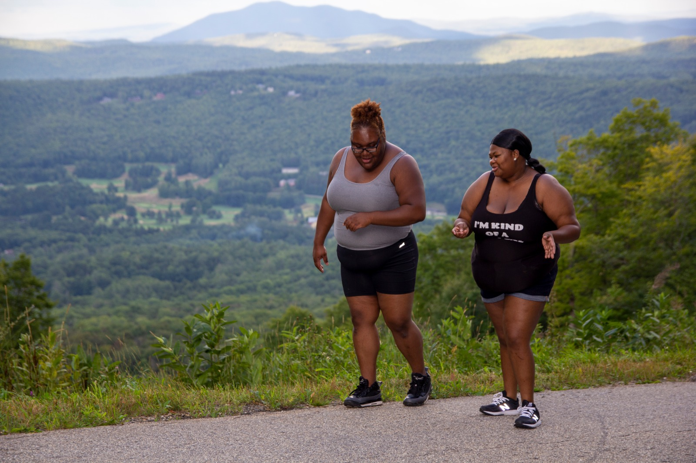
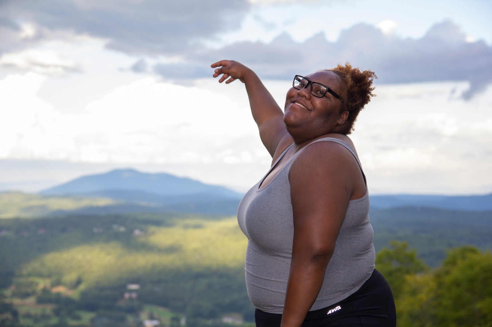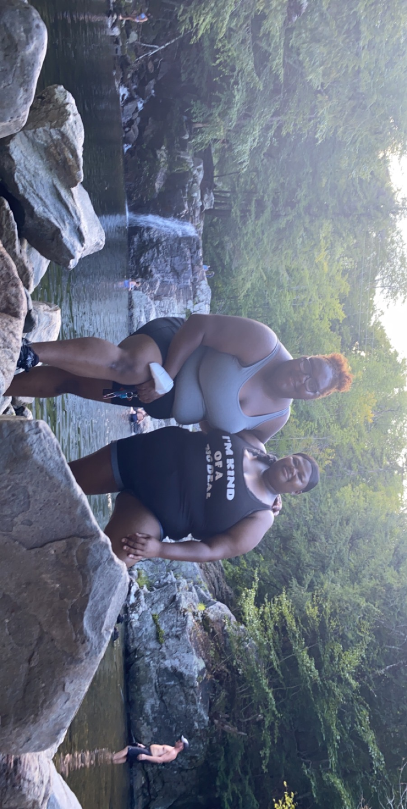
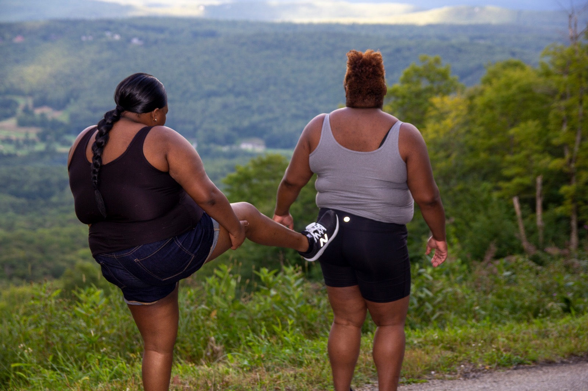
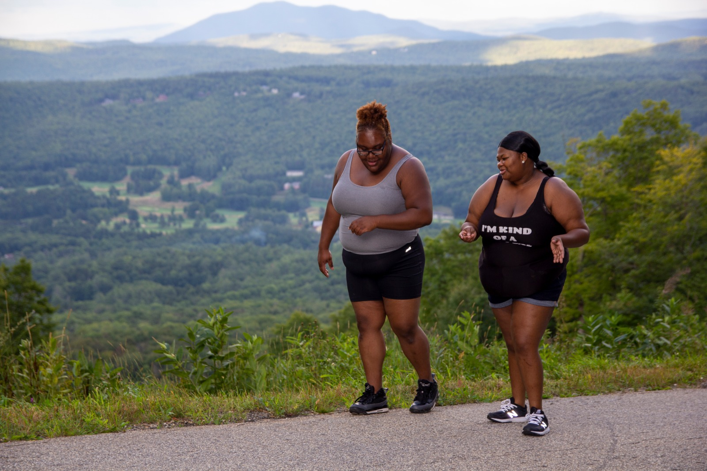